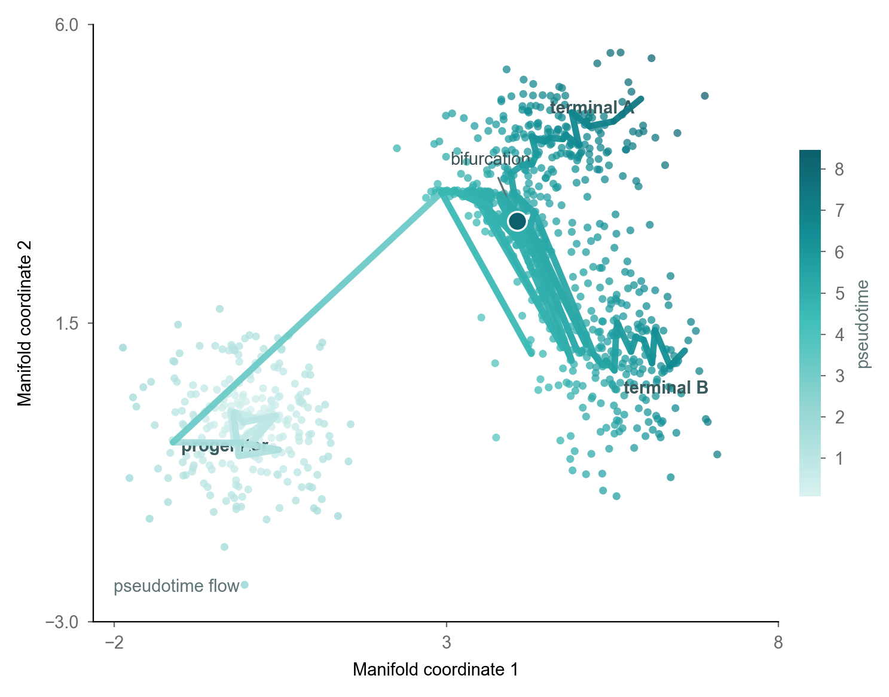

v1 candidate 你说 "好乱，奇怪的线条"
trajectory + pseudotime + bifurcation 全部叠加 = chaos

v2 candidate P8 only-1-info-dim
manifold geometry + cluster identity (4 distinct pastel hues only); no trajectory lines

REFERENCE diffusion_swiss_roll
你说"非常好看"